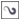
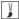

Быстрые ссылки на процедуры, описанные на этой странице:
• |
• |
В CorelDRAW можно наносить самые разные заготовки мазков кисти — от мазков с наконечниками до мазков, заполненных узорами радуги. При рисовании с помощью заготовки мазка кисти можно задать некоторые из его атрибутов. Например, можно изменить ширину мазка кисти и указать его сглаживание.
Можно также создавать специальные мазки кисти с помощью объекта или группы векторных объектов. После создания специального мазка кисти его можно сохранить как заготовку.
Изображение выше было создано с использованием множества различных мазков кисти разной ширины.
| Нанесение заготовки мазка кисти |
1. |
В наборе инструментов выберите инструмент Художественное
оформление .
|
2. |
На панели свойств нажмите кнопку Кисть .
|
3. |
Выберите категорию кисти в списке Категория.
|
4. |
Выберите мазок кисти в списке Список мазков кисти.
|
5. |
Перетащите до получения мазка требуемой формы.
|
Мазок кисти, которого нет в списке Список мазков кисти, можно
нанести, нажав кнопку Обзор на панели свойств и определив
местоположение файла мазка кисти.
|
Также можно выбирать мазки кисти в окне настройки
Художественное оформление. Чтобы открыть окно настройки
Художественное оформление, выберите в меню пункт Окно |
| Создание специального мазка кисти |
1. |
Выберите объект или набор сгруппированных объектов.
|
2. |
В наборе инструментов выберите инструмент Художественное
оформление .
|
3. |
На панели свойств нажмите кнопку Кисть.
|
4. |
Щелкните объект или группу объектов.
|
5. |
Нажмите кнопку Сохранить художественный мазок |
6. |
Введите имя файла, в котором будет сохранен мазок кисти.
|
7. |
Нажмите кнопку Сохранить.
|
Специальные мазки кисти можно выбрать на панели свойств в
области Пользовательские в списке Категория. Специальные мазки
кисти отображаются в списке Мазок кисти.
|
Чтобы удалить специальный мазок кисти, выберите значение
Специальный в списке Категория на панели свойств, а затем
выберите нужный мазок кисти в списке Список мазков кисти и
нажмите кнопку Удалить |
Copyright 2012 Corel Corporation. Все права защищены.